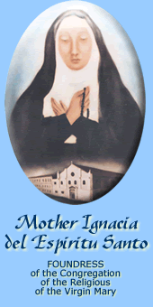

Biography of Venerable Ignacia del Espiritu Santo

(Foundress of the Religious of the Virgin Mary)
Ignacio Iuco was baptized IGNACIA DEL ESPIRITU SANTO, a name she took and was known until her death. Her father, Jusepe Iuco was a Chinese from Amoy, China; while her mother, Maria Jeronima, was a Filipina or Yndia as the Filipina was called then. She was the eldest of four children. There was a boy and two other girls who died in infancy. She was baptized on March 4, 1663 at Holy Kings Parian, but she grew up in Binondo, Manila, the place for converted Chinese. At the age of twenty-one, Ignacia’s parents wanted her to marry her off, she refused to get married. She felt, that married life was not the destiny God had assigned her. Seeking God’s will under the spiritual guidance of a Jesuit priest, Fr. Pablo Clain, she went on a retreat where she underwent the spiritual exercises of Ignatius de Loyola. Before the end of her retreat, she had decided to give her whole life to the Lord. Ignacia’s life was a solitary one, mostly devoted to prayer, sacrifice, and charitable work. Ignacia’s life attracted and appealed to many ladies who readily joined her; thus, the Beaterio dela Compania de Jesus was born in Intramuros. This group of ladies received this name because they frequently visited the Church of St. Ignatius, the church of Jesuits, otherwise known at the time Compania de Jesus. Life was difficult for the group of women in the beginning. They used banana leaves for plates, ate in the “batalan” during moonlit nights to save oil for light, and gathered firewood around the streets. Mother Ignacia, whose life of prayer and penance included carrying the cross under the noonday sun, exhorted her companions to pray God’s mercy and to trust in divine Providence. She earnestly rallied them to the Filipino dictum: “Nasa Diyos ang awa, nasa tao ang gawa”. Guided by the 1726 Rule, Mother Ignacia relinquished her position as head to mother Dominga del Rosario in 1737. The Rule stressed that everyone in the house belonged to the family of Mary, and her primary responsibility is to know and serve the Lord, to live one’s life on earth according to His teachings and to obtain eternal union with Him in heaven. Everyone was encouraged to live together as one community permeated by the spirit of peace, reconciliation, and love. On September 10, 1748, Mother Ignacia del Espiritu Santo died at the age of eighty-five years old. She was buried at the church of St. Ignatius. Her funeral was honored by the presence of ecclesiastics and Spaniards who bore her coffin. The group of Venerable Ignacia started to receive Civil Protection from the King of Spain on November 5, 1755 after having passed the scrutiny of the Royal Audencia. Their service unanimously rated as laudable to the City of Manila and the Council of State in Madrid considered its contribution as significant to the evangelization and colonization of Spain. It was said of them “closure or suspension of the Beaterio is prejudicial to the republic”. This was the result of a letter of the Archbishop of Manila who could not help noticing the exemplary life of service of this group of women and wanted something done for the Beatas. This process of the eighteenth century Spanish accreditation of a native group of women coming through Spain’s initiative was a landmark in the history of the Philippines, afflicted by racial discrimination where the Spaniards were considered first class citizens and the native third class. This was the time when the “patronato real” or royal subsidy and the natives were judge as immature in faith and adult in age but childish in behavior (forty years with a mind of a child). As regards women, religious converts founded by them were supposed to be a Spaniard membership and to be cloistered as in the case of Beaterio de Sta. Clara and Beateria de Sto. Domingo later. The congregation she started was described during her time as the “blossoming of virtues and virginity in a thorn-choked desert”. Twentieth century Philippines called the Religious of the Virgin Mary, the present name of the Beaterio as the citadel of religion and culture and the reincarnation of authentic Marian devotion in the Philippines. The year 1984 marked the celebration of the first three hundred years of the founding of the Religious of the Virgin Mary. And the highlight of the celebration was presentation of the “Beautiful Filipina”, a play by Fr. James B. Rueter, S.J. on the life of Venerable Ignacia del Espiritu Santo, the foundress; still, it portrayed the early history of the congregation. The presentations were held in Luzon, Visayas, and Mindanao. Down the centuries, Venerable Ignacia del Espiritu Santo has been described as discerning woman of courage with a strong faith in God. This faith propelled her to make bold initiatives in spirit of obstacles to be of service to all people, especially the poor, her very own people and discriminated against. This was the greatest service she rendered to her country and the Church.
Vission
ND-RVMCC envision a dynamic learning community taht empowers Ignacian Marian leaders for inner and Social transformation for the common good.
Mission
ND-RVMCC commits itself to:
♦ Develop Ignacian Marian leaders who are witnesses of faith, excellence, and service;
♦ Intensify instruction by pursuing innovative programs that employ relevant education strategies for technological advancement and stewardship of creation; and
♦ enhance linkages to facilitate instruction, reesearch, and community involvement to enhance the quality of life.
The SCHOOL SEAL

The seal of the school is characteristically Marian. The central motif is monogram AM which means Ave Maria. “Hail Mary”, the angelic salutation which is an ejaculatory praise of the Mother of God, Mother and the Patroness of the School. The twelve stars refer to the Vision of St. John. The stars represent extraordinary privileges bestowed by God on Mary. The rays radiating from the monogram signify the graces which come to us through Mary, from Jesus, the symbolization of the congregation’s motto: “To Jesus with Mary”. Etched below the monogram is the figure of an open book upon which is inscribed the school’s motto “INITIUM SAPIENTE TIMOR DOMINI” – Fear of God is the beginning of Wisdom. This is the real essence of education. The school is intent on imparting a filial fear of the Lord, a knowledge of the Lord, who in truth is the beginning of wisdom, for wisdom here means the Knowledge, the grasping and understanding of truth. If because of human frailty one fails to grasp the full meaning of such truth, at least the study of the science of God, Religion, is the beginning of wisdom. Immediately below the book is the white Sampaguita flower, the national flower of the Philippines. It stands for a congregation founded by a Filipina, Venerable Ignacia Del Espiritu Santo..